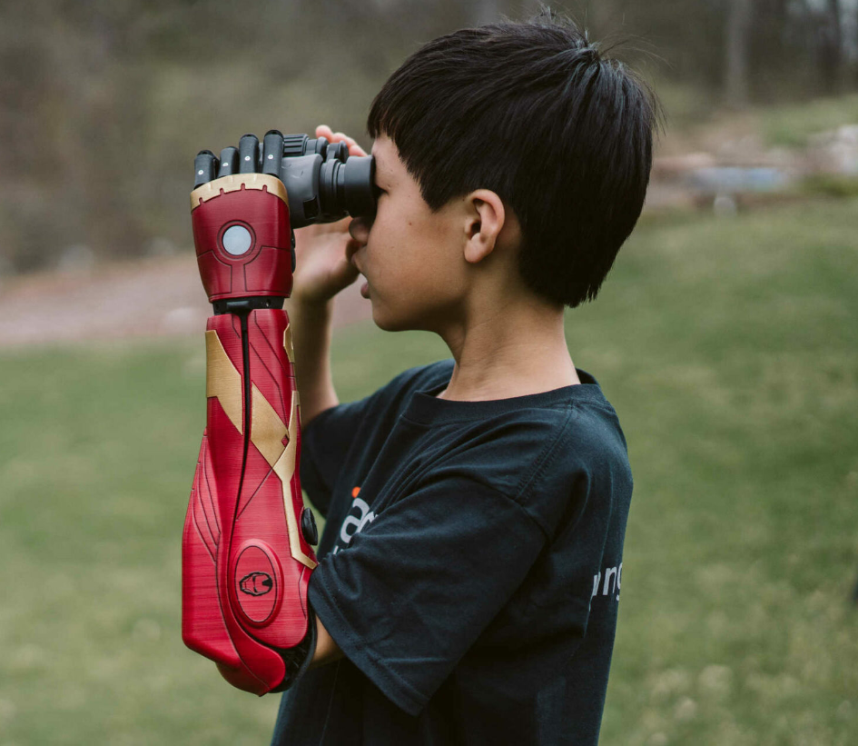

Table Of Contents |
|---|
| Abstract |
| Introduction |
| Social and Cultural Influences |
| Design: Past and Present |
| Case study |
| Conclusion |
| References |
| Presentation |
This essay delves into prosthetic devices’ effects on how the client perceives themselves and how they are perceived by society as a whole; how prosthetics are created with functional and aesthetic value in mind; whilst drawing comparisons between the functionality of expressive prostheses and what are deemed as “regular”, including the psychology behind the pursuit of aesthetic pleasure within prosthetic design. There has always been a stigma around those who wear prostheses; expressive prosthetics aim to remove this stigma and give the wearer more confidence in their everyday lives. An “expressive prosthesis” is a device designed with the personal aesthetic preferences of the client in mind. Open Bionics is an example of a company aiming to integrate the pleasure of an aesthetically pleasing device with a function and comfort of a practical bionic arm prosthetic. Overall, it’s clear that utilizing expressive prosthetics can effectively improve a patients quality of life.
A prosthetic device is defined as “an artificial body part that replaces a part that’s missing or no longer functional” (Cleveland Clinic, 2024) and must be “functional, comfortable and attractive” (Millstein et al in Zhou, 2023). This means a person can use prosthetics externally and internally; throughout this essay, external limb replacement prosthetic devices are the focal point. A patient may require a prosthesis (the singular noun referring to a prosthetic device) if they were “born without a body part or lost it to injury or disease” (Cleveland Clinic, 2024), this means, to some extent, to be considered useful it must replace that body part in functionality. For example, an amputee may require a prosthetic leg, thus the prosthesis must be able to comfortably and effectively support that person while walking. There is more to a prosthesis’ function than supporting its wearer physically: how it influences that person’s overall quality of life. “Quality of life” is defined by the WHOQOL-100, which assesses an individual’s “perceptions of their position in life in the context of the culture and value systems in which they live and in relation to their goals, expectations, standards and concerns” (WORLD HEALTH ORGANIZATION, 1998). This was developed to some extent, to assess medical practices and their effectiveness; so, to what extent is the pursuit of aesthetic pleasure with prostheses, a pursuit of function, and good quality of life? The idea of aesthetic judgement with prostheses is that of visual and emotional appeal to the client. Ultimately, the integration of aesthetics within expressive prostheses design positively influences a person’s quality of life.
There has always been a stigma around limb loss, and around those who use prosthetic limbs to compensate for this loss (Wordsworth, 2020) and a big question asked in more recent years is how to break that stigma. With the rapid development of the internet and the more widespread use of social media, there is no doubt people have been taking advantage of this period to experiment with how their sense of self influences their style: more people dying their hair and experimenting with fashion. So, then the question is how do prosthetics fit into this period of experimentalism with aesthetics? In the past a part of prosthetic functionality has been how well it allows someone to mould themselves to “fit back into” society after limb loss, however, interviews have proven that to some, these prostheses can do more harm than good. A lot of prosthesis users find that there is an awkwardness about wearing prosthetic devices in public, people often tread lighter around them as though they are fragile (Wordsworth, 2020). People find that expressive prosthesis are a way of starting a conversation: a way of telling people “I am OK” (Wordsworth, 2020). These words go to show just how much an aesthetic design on a prosthesis can help a wearer, this unspoken conversation makes their day-to-day lives much easier.
In the past, the design of prostheses has been focused on its functionality; returning the patient’s ability to perform tasks and just as important: returning themselves into society. Within aesthetic development there is a deep-rooted sense of social hierarchy as there has always been an “ideal” in Western medicine: white, gendered and able-bodied (Thompson, 2023). In turn, this means those not encompassed within this bracket are “punished” through the system. Prosthetics fall prey to this “ideal” in history, while not only catering to the need for function, they were also somewhat trying to cater to this notion of the “ideal”, resulting in an inaccessible prosthesis to some: something that doesn't make "them" feel like "them". In the past many prosthetics were designed with the comfort of society in mind, providing their aesthetic value, based on the “ideal”. Within the bracket of “expressive” prosthetics, it is clear this “ideal” is nowhere to be seen. The new idea of creating something loud and exciting removes the “ideal” and instead allows a person to be seen through their prosthesis; it is personal.
Some companies have already started working towards a world where users can express themselves freely using their prosthesis without compromising function at all. Open Bionics is one of them. Open Bionics is a company that strives towards a design that prioritises comfort, usability, and expression. Their bionic “Hero” arms have helped many, and are advertised as suitable for all ages, which is special for prosthetics as children are usually more difficult to cater to as they are growing. However, the Hero arm is important to children as it is customisable; allowing them peace and confidence in the differences they have from other children, able to show off a bright red, themed prosthesis on the playground as seen in Figure 1. Something “fun” is created from the loss and becomes an asset to the mental well-being of the child. Instead of a “regular prosthetic” open bionics allow something that isn’t “drab and functional” (Wordsworth, 2020) instead they are stylish and functional.
Figure 1: Expressive prosthetics in action (Open Bionics,2024)
Overall, a ‘regular’ prosthesis with no particularly special design is better for some, where they find more comfort in sinking into the crowd and being less noticed. However, for most, a prosthetic that reflects something within themself greatly improves their quality of life. They like to be perceived with their prosthesis, and it increases their individual and social confidence. What mostly influences a patient's quality of life is whether they feel good about what they are utilising: though it is agreed that “the mental health benefits of beautiful prostheses extend across the spectrum of amputees” and provide positive influence (Wordsworth, 2020). An expressive prosthesis is an extension of oneself and celebrates their abilities, rather than covers for that which they no longer have.
Georgiou, T. A. (2020). Development of Upper Limb Prosthetics and Orthotics via Additive Manufacturing Methods. eScholarship, University of California. Available at: https://escholarship.org/content/qt04j945q5/qt04j945q5.pdf (Accessed: November 21, 2024)
Millstein, S. G., Heger, H., & Hunter, G. A. (1986). Prosthetic Use in Adult Upper Limb Amputees. Prosthetics & Orthotics International, 10(1), 27–34. https://doi.org/10.3109/03093648609103076
Poliakoff, E., O’Kane, S., Carefoot, O., Kyberd, P., & Gowen, E. (2018). Investigating the uncanny valley for prosthetic hands. Prosthetics and Orthotics International, 42(1), 21–27. https://doi.org/10.1177/0309364617744083
Sansoni, S., Wodehouse, A., McFadyen, A., & Buis, A. (2015). The Aesthetic Appeal of Prosthetic Limbs and the Uncanny Valley: The Role of Personal Characteristics in Attraction. International Journal of Design, 9(1), 67–81. Available at: https://www.proquest.com/docview/1747731510?pq-origsite=primo&sourcetype=Scholarly%20Journals (Accessed: October 22, 2024)